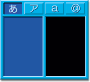

2001/10/30 toshi
H2N を立ち上げると，こんな画面が現れます．
これらの構成要素のうち，上部を「モード表示ペイン」， 左側を「左ペイン」，右側を「右ペイン」と呼びます． また，入力した文字が表示されていく部分を「テキストボックス」と 呼びます． カーソルは左右ペインのどちらかに一つ存在します． カーソルのあるペインが常にハイライトされています．
H2N は，初期状態では「入力モード」というモードになっています(詳細は後述)． PS2 の場合，入力モードにおけるコントロールパッドの ボタン配置は以下の通りです．
十字キーと右側のボタン 4 つは全て，カーソルの移動に使います． 十字キーは左ペインでの(左ペインへの)カーソル移動に， 右側の 4 つのボタンは右ペインでの(左ペインへの)カーソル移動に使います． 左ペインの移動に使うキーを「左ペイン移動キー」， 右ペインの移動に使うキーを「右ペイン移動キー」と呼びます．
初期状態では，カーソルは右ペインの真ん中， a の位置にあります． この位置をホームポジションと言います．
あるペインにカーソルがある状態でそのペインの移動キーを押すと， カーソルがその中を移動します． カーソルが無い方のペインの移動キーを押すと， カーソルはもう一つのペインに移動します．
決定キーを押すと，カーソルの位置にある文字が テキストボックスに入力され，カーソルはホームポジションに戻ります． 決定キーを押すと，カーソルは常にホームポジションに戻るので， 各文字の入力は，例えば g なら ↑ ← というように， 常にホームポジションからのカーソル移動に対応させて 覚えればよいということになります．
後述する入力メソッド切り替えをして記号モードにすると 文字配列が以下のように切り替わります．
この場合のホームポジションは @ の位置になります．
英語モードにすると，変換キーは 「大文字小文字の切り替え」という意味になります． これを押すと， カーソルの前にある文字が大文字なら小文字に， 小文字なら大文字に変換されます．
入力モードからモード変更キーを押すと，機能モードになります． 機能モードの画面は以下のようになっています．
機能モードでのボタン配置は，以下のようになります．
十字キーを押すと，テキストボックスの中のカーソルが移動します．
モード切り替えキーを押すと入力モードに戻ります．
入力メソッド切り替えキーを押すと，入力メソッドが あ → ア → A → @ → あ … という風に循環して切り替わります．
Last modified: Mon Nov 12 18:16:14 JST 2001